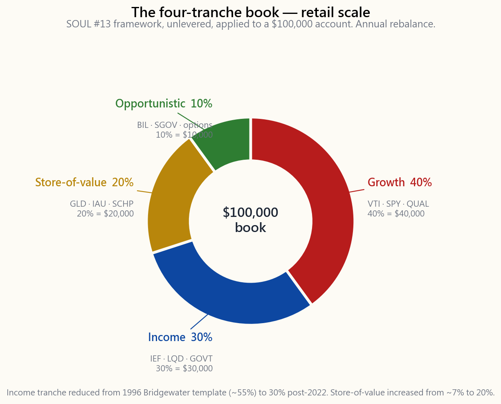

Week 15: Multi-Asset Portfolios — Risk Parity, All-Weather, and the Four-Tranche Framework
1. Why This Is Important
Week 4 gave you 60/40. Week 6 gave you gold. Week 13 gave you the short side. This week the course finally puts those pieces inside one coherent allocation framework — the same framework Bridgewater has run since 1996, the same framework Cliff Asness debuted at AQR in 2004, and the same shape Horace's SOUL #13 four-tranche book is designed to imitate at retail scale.
You need this lesson for four reasons.
because stocks and bonds were negatively correlated and inflation was falling. When that regime broke in 2022 — both legs down 18% together — the question stopped being "stocks or bonds?" and started being "what is the portfolio that does not depend on a single macro outcome to survive?" Multi-asset construction is the answer the institutional world settled on, and you should know the architecture before you accept or reject it.
allocation asks "what fraction of my dollars goes to each asset?" Risk parity asks "what fraction of my risk comes from each asset?" In a 60/40 book at typical vols, roughly 90% of the portfolio's variance comes from the equity sleeve, even though only 60% of the dollars are there. Once you see that, you cannot un-see it — the 40% bond sleeve is a rounding error in risk terms.
picture of macro you will ever own.** Growth × inflation, two axes, four cells, one winning asset class per cell. It is not a complete forecasting tool. It is something better — a checklist that forces you to ask, before you size any position, *which quadrant is this trade a bet on?* Most retail blow-ups come from running an unhedged single-quadrant book and not knowing it.
four-tranche SOUL #13 frame (growth / income / store-of-value / opportunistic) is what we will populate in Weeks 16-30 with sectors, factors, options strategies, and barbell tilts. Without the multi-asset chassis from this week, those later trades have no home to go in.
This is not a recommendation that you literally run risk parity at home. The leverage and rebalancing required are institutional. It is a recommendation that you understand the principles, then apply the shape — not the leverage — to your own four-tranche book.
2. What You Need to Know
2.1 The 2022 Break and Why It Reframed Everything
Walk forward from 1981. Treasury yields fall from 15% to 0.5% over forty years. Every time inflation prints surprised softer, bonds rally. Every time growth prints surprised softer, stocks fall and bonds rally. The stock-bond correlation runs around -0.3 for two decades. 60/40 looks like a perpetual motion machine.
Then 2022 happens. The Fed hikes 525 basis points in fifteen months to fight a 9% CPI print. Long Treasuries (TLT) finish the year down 31%. The S&P 500 finishes down 18%. The Bloomberg Aggregate Bond Index finishes down 13% — its worst calendar year since the index launched in 1976. A 60/40 book loses roughly 17%, the worst real return for the strategy since 1937. The negative correlation that made 60/40 work flipped. It is positive again at the time of writing (April 2026), and the institutional consensus is that as long as inflation is the dominant macro risk, stock-bond correlation will stay positive — the same shock that scares stocks now hurts bonds too.
This is the regime change SOUL #2 warns about. Forty years of falling rates and falling inflation handed passive allocators a tailwind. That tailwind is gone. The portfolios designed for it inherited a hidden vulnerability: they were one-quadrant trades.
2.2 The All-Weather Quadrants — Growth × Inflation
Ray Dalio's framework, formalised at Bridgewater in 1996, organises every macro shock into a 2x2 grid. Two axes:
- Growth surprise — is GDP / earnings growth coming in higher
- Inflation surprise — is CPI / wage growth coming in higher or
The word surprise matters. Markets price expected growth and expected inflation already. What moves portfolios is the residual.
Each quadrant has a winning asset class — the one whose payoff is structurally exposed to that macro residual.

The historical anchors:
- Rising growth, rising inflation (top-left): 1970s, 2003-2007,
- Rising growth, falling inflation (top-right): 1991-1999,
- Falling growth, rising inflation (bottom-left): 1973-74,
- Falling growth, falling inflation (bottom-right): 2001-02,
The Bridgewater claim — and it is empirically defensible — is that if you can hold one asset levered to each cell at *equal risk contribution*, the four streams roughly cancel and you get a portfolio that is no longer betting on any single quadrant.
2.3 Risk Parity — Allocation by Variance, Not Dollars
The technical machinery is one equation. Given $n$ assets with volatilities $\sigma_1, \dots, \sigma_n$, the unlevered risk-parity weight on asset $i$ is
$$ w_i = \frac{1/\sigma_i}{\sum_{j=1}^{n} 1/\sigma_j} $$
That is: each asset gets a dollar weight inversely proportional to its volatility. The high-vol asset (equity at $\sigma \approx 16\%$) gets a small dollar weight; the low-vol asset (long Treasuries at $\sigma \approx 8\%$) gets a large dollar weight; and at the limit, each asset contributes the same variance to the portfolio.
For four assets at typical vols — equity 16%, 10-year Treasury 6%, gold 18%, T-bills 1% — the inverse-vol weights are:
| Asset | Vol | 1/σ | Raw weight | Risk-parity weight |
|---|---|---|---|---|
| US equity (SPY) | 16% | 6.25 | 0.067 | 6% |
| 10y Treasury (IEF) | 6% | 16.67 | 0.179 | 18% |
| Gold (GLD) | 18% | 5.56 | 0.060 | 6% |
| T-bills (BIL) | 1% | 100.0 | 1.072 | 107% — clipped to 70% |
Already a problem. The cash sleeve is so low-vol that pure inverse-vol weighting wants to put more than 100% there. The standard fix at Bridgewater is to drop cash from the unlevered book and *lever the remainder* — typically up to 1.5x to 2x of NAV — so the portfolio hits a target volatility (often 10% per year). The leverage is mostly via Treasury futures, where margin is cheap and basis is tight. The leverage is the price of admission. Without it, an unlevered all-weather book at 60% Treasuries earns only 5-6% per year, which loses to plain 60/40 over most decades.
2.4 The 2022 Risk-Parity Break
For twenty-five years, leveraged risk parity worked. Then 2022 happened the same way to the strategy as to 60/40, but worse — because the leverage amplified the bond loss.
Bridgewater's All-Weather strategy lost roughly 25% in 2022, reportedly its largest calendar drawdown since launch. AQR's Risk Parity Fund (QRPIX) lost roughly 19%. The mechanism is mechanical: leveraged Treasury futures lost 25-30% of notional, and the leverage multiplier turned that into the dominant P&L line. The equity sleeve (small dollar weight, but high vol) lost another chunk. Gold was roughly flat. T-bills earned 2%. There was no quadrant working — inflation was rising, growth was slowing, but the policy response hit bonds harder than the slowdown helped them.
The lesson is not that risk parity is broken. The lesson is that **every diversification scheme that uses leverage to equalise risk contributions assumes the cross-correlations stay where the back-test put them**. When stock-bond correlation flips from -0.3 to +0.5, the diversification math breaks and the leverage that was supposed to help you starts hurting you. This is the same risk SOUL #6 calls vol-tail-wags-dog: the correlation tail wagged the allocation dog.
The institutional response since 2023 has been to add a fifth sleeve — explicit inflation hedges (TIPS, commodities, gold) — at larger weight than the original Bridgewater template, and to hold less leverage in the bond sleeve. The shape is converging on what SOUL #13 calls the four-tranche book.
2.5 The Four Tranches — SOUL #13 at Retail Scale
Strip out the institutional leverage and what remains is a clean four-bucket structure that any retail account can hold using ETFs.

The four tranches:
(VTI, SPY) plus a quality factor tilt (QUAL) covered in Week 23. This is the engine of long-run real return. It is also the sleeve that loses in the bottom-left and bottom-right quadrants, which is precisely why it is not 60-100% of the book.
with a small investment-grade credit slice (LQD). This is the sleeve that wins in the bottom-right (deflation) cell and provides the carry that finances the other tranches. After 2022 the institutional consensus is to under-weight duration relative to the historical risk-parity prescription — 30%, not 60%.
sleeve that wins in the bottom-left (stagflation) cell. SOUL #3 reminds you these instruments are belief trades — gold has no coupon, TIPS pay only the inflation print — but the belief has a 1000-year track record and a reliable bid in regime breaks.
and the options premium / barbell trades from SOUL #14 and Weeks 25-30. This is the sleeve that lets you add when something gets cheap. SOUL #14 is explicit: dry powder is not a cost, it is the asymmetric option that funds the other three sleeves' rebalances.
| Tranche | Weight | Vehicles | Quadrant served |
|---|---|---|---|
| Growth | 40% | VTI, SPY, QQQ, QUAL | Top-right (Goldilocks) |
| Income | 30% | IEF, LQD, GOVT | Bottom-right (deflation) |
| Store-of-value | 20% | GLD, IAU, SCHP | Bottom-left (stagflation) |
| Opportunistic | 10% | BIL, SGOV, options | Top-left + dry powder |
This is not a risk-parity book — the dollar weights are higher than the equal-risk-contribution math would prescribe for equity. It is deliberately closer to a 60/40 starting point, *adjusted for the post-2022 regime*. The store-of-value sleeve is materially larger than what Bridgewater's original 1996 template ran (5-15%), and the income sleeve is materially smaller. The shape is the SOUL #14 barbell — actual safety on one end, asymmetric upside on the other — applied at the asset-allocation layer.
2.6 Backtest — All-Weather vs 60/40 vs 100% Equity, 1928-2024
Run the four-tranche book back against Damodaran's 1928-2024 annual data, with gold filled at 4% real per year before 1971 (the gold-standard window where the price was fixed) and at the actual London PM-fix annual return after. Annual rebalance. The results:
| Metric | 100% equity | 60/40 | All-weather (40/30/20/10) |
|---|---|---|---|
| Geometric annual return (nominal) | 9.6% | 7.4% | 6.7% |
| Geometric annual real return | 6.6% | 4.4% | 3.7% |
| Annualised volatility | 19.6% | 12.0% | 9.4% |
| Sharpe (excess over T-bills) | 0.30 | 0.30 | 0.32 |
| Max real drawdown | -75% (1929-32) | -53% (1929-32) | -38% (1973-74) |
| Worst calendar year | -44% (1931) | -28% (1931) | -19% (1981) |
| Decades with positive real return | 8 of 10 | 9 of 10 | 10 of 10 |
The all-weather book gives up about 90 bps of real CAGR versus 60/40 in exchange for two things: every decade is positive in real terms, and the worst real drawdown is 15 percentage points smaller. That trade is worth it for an investor who lives off the portfolio. It is not worth it for a 35-year-old with a 30-year horizon and a paycheque, who should be closer to the SOUL #14 barbell — heavier equity, smaller but real safety sleeve, larger opportunistic tail.
The interactive below lets you slide the four weights and watch the historical wealth path, max drawdown, Sharpe, and drawdown duration update in real time. Try the institutional 35/40/15/10 template, the 40/30/20/10 retail template, and the SOUL #14 barbell at 60/10/20/10 and compare them on the same chart.
2.7 What This Lesson Is Not
A few things this lesson is not telling you to do.
- Not telling you to run leverage. The Bridgewater leverage is
- Not telling you to abandon 60/40. For a long-horizon
- Not telling you to equal-weight quadrants forever. The shape
3. Common Misconceptions
parity weights inversely by volatility, which gives a small equity weight and a large bond weight, and then levers the whole thing to a target vol. A 50/50 mix is closer to risk-parity than 60/40 but it is still equity-dominated in variance terms.
about the cross-correlation between return streams, not the number of tickers. A portfolio of 100 tech stocks is one return stream. A portfolio of one S&P fund + one Treasury fund + gold is three.
harder regime than the one it was designed for. In the 1970s 60/40 had a real-return drawdown of -33% and recovered. The regime-vulnerability is real but the portfolio still works.
it earned less in compound terms. Its claim is on lower drawdowns and a smoother return path, not higher returns.
not its standalone return — it is its covariance with stress. At a 20% allocation it added 80 bps of Sharpe to an all-weather book over 1971-2024 even though it earned less than equity.
from quadrant-specific shocks. It does not protect you from a correlation regime change. 2022 was the latter.
explicit: a 10% cash sleeve that lets you add 5% to equity at a 30% drawdown is not drag — it is the option that pays for itself in the next bear market.
run Bridgewater's version of all-weather at 10% target vol. You do not need it to run the unlevered four-tranche shape, which targets 9-10% vol naturally because of how the dollar weights land.
similar; the shape is not. Two portfolios with the same Sharpe but different max drawdowns are not equivalent for a retiree, an endowment, or anyone using SOUL #15-style options on the equity sleeve.
(the BLS CPI). They do not solve regime-shift inflation (the 1970s) and they do not solve sovereign debasement (SOUL #3). Gold is the second leg of the store-of-value tranche for a reason.
4. Q&A Section
Q: Should I literally run 40/30/20/10 in my IRA tomorrow? A: As a starting point, yes — it is a defensible default and will not hurt you over a 10-year horizon. But the right long-run weight depends on your horizon and your other income sources. A 30-year-old with a stable paycheque should probably tilt the equity sleeve up toward 60-70%; a 65-year-old drawing 4% per year should probably stay at 40-50% equity. The chassis is what is fixed; the tilts are personal.
Q: How do I rebalance a four-tranche book? A: Once a year, in January, mechanically. If any sleeve is more than 5 percentage points off target, trade it back. Week 7's interactive shows that band rebalancing beats calendar rebalancing slightly on turnover but the gap is small — what matters is doing it at all.
Q: Is risk parity practical for a $50,000 account? A: The dollar-weight shape is. The leverage is not. To get Bridgewater's 10% target vol unlevered you would need 80% bonds, and that earns 5% nominal — not enough. Skip the leverage, run the four-tranche shape unlevered, target 9-10% vol naturally.
Q: Why 20% in store-of-value, not the historical 5%? A: Because we are no longer in the 1996-2020 disinflationary regime. Bridgewater's original 5-7% gold sleeve was sized for a world where inflation was a tail risk, not a base case. April 2026 is not that world. SOUL #2 anchors the regime change; the bigger gold weight is the chassis adjustment.
Q: What about international equity? You only mention US. A: SOUL #16 is explicit — for a US-domiciled investor, after fees, withholding taxes, currency hedging costs, and capital controls, US-listed equities are the only equities reliably investable. Owning EFA or VWO is an option but a small one, and most of the international exposure you actually want is already inside SPY's international revenue lines.
**Q: Should I add private equity or venture in the opportunistic sleeve?** A: Not at retail. Liquidity, fees, and the 10-year lockup destroy the "opportunistic" property. The retail opportunistic sleeve should stay liquid — cash, T-bills, and the options structures from Weeks 25-30. SOUL #14 is explicit on this: a barbell only works if both ends are liquid.
Q: What if I disagree with the quadrant model? A: Run the unlevered version and see how it performs in a decade you think the model gets wrong. The 1970s and 2022 are the two periods where the model gets criticised. In both, the all-weather book had a smaller real drawdown than 60/40 and a positive real return for the decade. The model is not perfect; it is more robust than the single-quadrant alternatives.
Q: How does this connect to factor investing in Week 23? A: The four tranches are the asset-class chassis. Factor tilts — quality, value, momentum, low-vol — go inside the growth tranche. You do not run quality at the expense of bonds; you run quality at the expense of plain S&P inside the 40% equity sleeve.
Q: Is the all-weather chassis tax-efficient? A: Less than 100% equity. Treasury and TIPS coupons are taxable as ordinary income at the federal level (state-tax-exempt for Treasuries). Gold ETFs (GLD, IAU) are taxed as collectibles at 28% long-term. SOUL #15 is explicit: hold the income and store-of-value tranches in tax-advantaged accounts (IRA, 401k, HSA) and reserve the taxable account for the equity sleeve, where long-term cap gains and qualified dividends apply.
**Q: What is the single biggest mistake retail investors make with this framework?** A: Looking at the last twelve months. The all-weather chassis is a multi-decade architecture; in any given twelve-month window it will underperform whichever single quadrant is winning. The investor who checks performance monthly and chases the leader is not running all-weather — they are running momentum on quadrants, badly.
**Q: How does this relate to the dashboard at the top of the website?** A: The dashboard tracks a four-tranche book at 50/20/20/10 with a 2-year duration income sleeve and a barbell options overlay on the opportunistic sleeve. It is one specific instantiation of this chassis, not the chassis itself.
第十五週：多資產配置
閱讀部分
a) 為何這個課題至關重要
大多數初學投資者認為投資就是在股票和債券之間作選擇。這種二元思維框架存在嚴重缺陷。投資領域極為廣闊——它涵蓋房地產、商品、私募股權、基礎設施、對沖基金策略等等。每個資產類別都有其獨特的回報特性、風險特徵，以及對不同經濟環境的敏感程度。將自己局限於兩種投資工具，猶如以一隻手綁在背後烹飪。
多資產配置的重要性體現在三個根本原因上：
本課將帶你認識主要資產類別、它們如何透過相關性相互影響、如何運用現代投資組合理論構建效率投資組合，以及風險平價等更進階的方法如何嘗試改善傳統配置方式。
b) 你需要掌握的知識
1. 主要資產類別
資產類別是一個廣泛的投資類別，其中的投資工具擁有相似特性、在市場上表現相近，並受相同法律法規約束。以下是個人投資者可接觸的主要資產類別：
股票（股票）
- 公司的所有權份額
- 長期預期回報最高（歷史上實際年化約7-10%）
- 波動性最高（年度標準差約15-20%）
- 對經濟增長和企業盈利敏感
- 子類別：本地大型股、小型股、國際已發展市場、新興市場
- 向政府或企業提供的貸款
- 預期回報較低（歷史上實際年化約1-4%）
- 波動性較低（年度標準差約4-8%）
- 對利率和通脹預期敏感
- 子類別：政府債券、投資級別企業債券、高收益債券、通脹掛鉤債券、國際債券
- 持有實體物業或房地產相關證券
- 回報介乎股票與債券之間（歷史上實際年化約5-7%）
- 中等波動性
- 透過租金提供收入及通脹保護
- 可透過上市房地產信託基金及房地產信託基金交易所買賣基金進行投資
- 實物商品：能源、金屬、農產品
- 長期實際回報較低（約0-2%），但具有寶貴的分散風險功能
- 高波動性，與股票和債券的相關性低
- 強力的通脹對沖工具
- 可透過商品期貨交易所買賣基金及商品生產公司股票進行投資
- 數千年來的價值儲存工具
- 長期實際回報低（約0-1%）
- 作為危機對沖及通脹對沖工具具有重要價值
- 在市場對政府及貨幣信心下跌時往往表現良好
- 可透過黃金交易所買賣基金（GLD、IAU）及礦業股票進行投資
- 國庫券、貨幣市場基金、儲蓄賬戶
- 回報最低，但以名義值計算波動性為零
- 提供靈活性——在市場崩潰時能夠買入資產的能力
- 常被忽視為策略性配置
資產類別風險回報圖譜
================================
預期 新興
實際回報 市場
(%) *
10 | *
| 小型股
8 | *
| 美國大型股
6 | *
| 房地產信託基金
5 | *
| 企業債券
4 | *
| 政府債券
3 | *
| 通脹掛鉤債券
2 |*
|* 黃金
1 |* 商品
|
0 +--*--+-----+-----+-----+-----+-----+-----+---
現金 5 10 15 20 25 30 35
波動性（標準差 %）
較高回報通常需要承受較高風險。
多資產配置旨在尋找最佳取捨點。
2. 相關性——分散投資的關鍵
多資產投資的威力，並非來自個別資產類別的回報，而是來自資產之間的相對走勢。相關性衡量這種共同走勢，範圍介於-1至+1之間。
- 相關性 = +1.0： 資產走勢完全一致。無任何分散投資效益。
- 相關性 = 0.0： 資產走勢相互獨立。良好的分散投資效果。
- 相關性 = -1.0： 資產走勢方向相反。最大的分散投資效益。
相關性矩陣（近似歷史數值）
====================================================
美國 國際 新興 美國 企業 商品 黃金 房地產
股票 股票 市場 債券 債券 信託基金
股票
美國股票 1.00
國際股票 0.75 1.00
新興市場股票 0.65 0.70 1.00
美國債券 -0.10 0.00 0.05 1.00
企業債券 0.25 0.15 0.20 0.75 1.00
商品 0.15 0.20 0.30 -0.10 0.00 1.00
黃金 -0.05 0.05 0.05 0.30 0.10 0.25 1.00
房地產信託基金0.55 0.40 0.40 0.15 0.25 0.10 0.05 1.00
矩陣關鍵洞察：
- 美國股票與國際股票高度相關（0.75）——分散效益有限
- 美國債券與股票呈負相關——強效分散工具
- 商品與幾乎所有資產的相關性均低——具有重要配置價值
- 黃金與股票相關性接近零——危機對沖工具
- 房地產信託基金與股票中度相關——具有一定分散效益
重要警告：相關性並非一成不變。 在市場危機期間，相關性往往急劇攀升。在平靜時期看似不相關的資產，在恐慌期間可能突然同步下跌。這被稱為「相關性崩潰」，是投資組合構建中最大的風險之一。2008年金融危機清楚地說明了這一點——除美國國庫債券和黃金外，幾乎所有資產均同步下跌。
壓力環境下的相關性行為
====================================
正常市場： 危機市場：
（相關性急升）
股票A 債券 股票A 債券
\ / \ |
\ / \ | （仍有一定
\ / \ | 分散效益）
\/ \ |
低／負相關 --------
中度相關
股票A 黃金 股票A 黃金
\ / | /
\ / 接近零 | / 負相關
\ / 相關性 | / （股票崩潰時
\/ | / 黃金上漲）
------
啟示：構建投資組合時，要為風暴做好準備，而非只為晴天規劃。
3. 現代投資組合理論與效率前沿
1952年，哈里·馬科維茨發表了一篇最終為他贏得諾貝爾獎的論文。核心洞見革命性地簡單：投資者不應孤立地評估資產。重要的是每項資產如何影響整體投資組合的風險與回報。
核心理念： 對於任何給定的風險水平，存在一種最優資產組合，能夠最大化預期回報。所有此類最優投資組合的集合，構成一條稱為效率前沿的曲線。
效率前沿
=======================
預期
回報 (%)
| * 進取型
| * （90/10 股票/債券）
12 | *
| *
10 | * <-- 效率前沿
| * （最佳風險/回報取捨）
8 | *
| 均衡型（60/40）
6 | *
| *
5 | * 保守型（30/70）
| *
4 | *
| * 100% 債券
3 |*
|
2 |
+----+----+----+----+----+----+----+----+----+---
0 2 4 6 8 10 12 14 16 18
投資組合風險（標準差 %）
x x
位於前沿以下的 個別資產
投資組合屬 通常落在
低效率 前沿以下
任何位於曲線以下的投資組合均屬次優：透過移向前沿，
你可以在相同風險下獲取更高回報，或在相同回報下承受更低風險。
如何解讀效率前沿：
構建位於效率前沿上的投資組合需要三項輸入：
投資組合優化的數學計算，在此基礎上找出在每個風險水平下最大化回報的權重。以下兩項資產投資組合的風險公式，說明了分散投資的原理：
投資組合風險公式（兩項資產）
====================================
投資組合方差 = w1^2 方差1 + w2^2 方差2 + 2 w1 w2 * 協方差(1,2)
其中：
w1, w2 = 投資組合權重（總和必須為1.0）
方差1, 方差2 = 各資產的方差
協方差(1,2) = 協方差 = 相關性 標準差1 標準差2
示例：
資產A：權重 = 60%，標準差 = 15%
資產B：權重 = 40%，標準差 = 5%
相關性 = -0.10
投資組合方差 = (0.60)^2 * (0.15)^2
+ (0.40)^2 * (0.05)^2
+ 2 (0.60) (0.40) (-0.10) (0.15) * (0.05)
= 0.0081 + 0.0004 + (-0.00036)
= 0.00814
投資組合標準差 = sqrt(0.00814) = 9.02%
注意：60%配置於波動性15%的資產，40%配置於波動性5%的資產，
投資組合波動性僅為9.02%——低於加權平均值11%（0.6015 + 0.405）。
這正是分散投資的效果！
負相關項從總風險中抵銷了部分風險。
4. 超越均值-方差：風險平價
現代投資組合理論有一個眾所周知的弱點：對輸入數據極為敏感。預期回報的微小變化，可能產生截然不同的投資組合配置。而預期回報的估算本身極為困難。
風險平價採取了不同的方法。它不以回報優化為目標，而是完全聚焦於風險。其理念是：平衡每個資產類別的風險貢獻，使任何單一資產都不會主導投資組合的整體風險特徵。
60/40的問題所在：
60/40投資組合：風險貢獻分析
=============================================
配置比例 風險貢獻
（按權重） （按方差）
+-----------+ +-----------------+
股票 | | | |
60% | 60% | | ~90% |
| | | |
+-----------+ +-----------------+
債券 | | | |
40% | 40% | |~10%|
+-----------+ +----+
儘管債券佔投資組合權重的40%，其風險貢獻僅約10%。
該投資組合本質上是一個以槓桿押注股票的投資組合。
當股票崩潰時，60/40投資組合亦隨之下跌——
債券的緩衝作用微乎其微，因為其風險貢獻微不足道。
風險平價解決方案： 配置時使每個資產類別對投資組合風險的貢獻相等。由於債券波動性低於股票，這意味著需要持有更多債券（通常使用槓桿以達到具競爭力的回報）。
風險平價投資組合概念
==============================
傳統60/40： 風險平價：
權重： 風險： 權重： 風險：
+------+--------+ +-----------+------+
|股票 | 股票 | | 債券 | 債券 |
| 60% | 90% | | ~55% | ~33% |
+------+--------+ +-----------+------+
|債券 | 債券 | |股票 ~25% | 股票 |
| 40% | 10% | | | ~33% |
+------+--------+ +-----+-----+------+
|商品 ~20% | 商品 |
| | ~33% |
+-----------+------+
風險平價向低波動性資產（債券）配置更多，
向高波動性資產（股票）配置更少，
再透過槓桿提升整體回報。
結果：每個資產類別貢獻約33%的風險，
因此沒有任何單一資產類別能主導投資組合的損失。
風險平價的優勢：
- 更均衡的跨經濟環境風險敞口
- 對預期回報估算的敏感性較低
- 歷史上在增長期和衰退期均表現良好
- 被主要對沖基金採用（橋水基金的全天候投資組合）
- 通常需要槓桿才能達到目標回報
- 大量債券配置在利率上升環境下可能受損
- 槓桿本身帶來額外風險和成本
- 實施難度高於傳統配置
5. 多資產投資組合範例
以下是幾個廣為人知的多資產投資組合模板，從簡單到複雜排列：
多資產投資組合範例
==============================
三基金投資組合（布格頭經典）
簡單、有效、低成本
+------------------------------------------+
| 美國全市場股票 | 50% |
| 國際股票市場 | 30% |
| 美國全市場債券 | 20% |
+------------------------------------------+
總計：100% 管理費比率：約0.03-0.05%
加入實物資產的四基金投資組合
加入通脹保護
+------------------------------------------+
| 美國全市場股票 | 40% |
| 國際股票 | 20% |
| 美國全市場債券 | 25% |
| 房地產信託基金 | 15% |
+------------------------------------------+
總計：100% 管理費比率：約0.05-0.08%
全天候啟發型（簡化版瑞·達利歐）
為所有經濟環境而設
+------------------------------------------+
| 美國股票 | 30% |
| 長期國庫債券 | 40% |
| 中期國庫債券 | 15% |
| 黃金 | 7.5% |
| 商品 | 7.5% |
+------------------------------------------+
總計：100% 管理費比率：約0.10-0.20%
耶魯捐贈基金啟發型（簡化版斯文森）
強調另類資產和分散投資
+------------------------------------------+
| 美國股票 | 30% |
| 國際已發展市場 | 15% |
| 新興市場 | 10% |
| 房地產信託基金 | 15% |
| 通脹掛鉤債券（通脹保護） | 15% |
| 名義債券 | 15% |
+------------------------------------------+
總計：100% 管理費比率：約0.08-0.15%
輕量風險平價（無槓桿）
無需槓桿的等風險貢獻
+------------------------------------------+
| 美國股票 | 20% |
| 國際股票 | 10% |
| 長期國庫債券 | 30% |
| 通脹掛鉤債券 | 15% |
| 黃金 | 10% |
| 商品 | 10% |
| 房地產信託基金 | 5% |
+------------------------------------------+
總計：100% 管理費比率：約0.10-0.20%
經濟環境覆蓋圖
==============================
經濟環境： | 增長 | 增長 | 衰退 | 衰退
| +低 | +高 | +低 | +高
| 通脹 | 通脹 | 通脹 | 通脹
|（繁榮）|（過熱）|（通縮） |（滯脹）
-----------------+--------+--------+------------+----------
股票 | +++ | + | --- | --
債券 | + | -- | +++ | --
商品 | + | +++ | - | ++
黃金 | - | ++ | + | +++
房地產信託基金 | +++ | + | -- | -
通脹掛鉤債券 | + | ++ | + | ++
現金 | - | - | + | +
-----------------+--------+--------+------------+----------
+++ = 表現強勁 + = 小幅正回報
- = 小幅負回報 --- = 表現欠佳
多資產投資組合在每種經濟環境下，
都有部分資產表現良好。這正是多資產配置的核心所在。
6. 多資產投資組合的再平衡
設定目標配置後，市場走勢將使實際權重偏離目標。再平衡是將投資組合恢復至目標權重的過程。
定期再平衡： 按固定時間間隔（每季、每半年、每年）檢查並再平衡。操作簡單，但可能過早或過遲進行再平衡。
閾值再平衡： 當任何資產類別偏離目標超過設定幅度（如5個百分點）時進行再平衡。反應更靈敏，但需要持續監察。
成本敏感再平衡： 將交易成本和稅務影響納入考慮。利用新增資金購買比重偏低的資產，而非出售比重偏高的資產。將股息直接投向比重偏低的持倉。
再平衡示意圖
=========================
目標配置： 市場波動後：
美國股票 40% 美國股票 48% (+8) --> 賣出
國際股票 20% 國際股票 17% (-3) --> 買入
債券 25% 債券 22% (-3) --> 買入
黃金 10% 黃金 8% (-2) --> 買入
房地產信託基金 5% 房地產信託基金 5% ( 0) --> 持有
再平衡意味著賣出表現良好的資產，買入表現落後的資產。
這看似違反直覺，但實際上是執行「低買高賣」策略。
再平衡紅利：歷史上每年可透過這種系統性逆向操作
額外增加約0.3-0.5%的回報。
7. 利用交易所買賣基金實施多資產配置
多資產投資的實際優勢在於，你可以使用低成本交易所買賣基金，構建媲美機構的高質量投資組合。以下是各資產類別與交易所買賣基金的對照表：
資產類別與交易所買賣基金對照表
============================
資產類別 | 常用交易所買賣基金 | 管理費比率
------------------------+---------------------+--------------
美國全市場股票 | VTI, ITOT, SPTM | 0.03%
美國大型股 | VOO, IVV, SPY | 0.03-0.09%
美國小型股 | VB, IJR, SCHA | 0.04-0.06%
國際已發展市場 | VXUS, IXUS, EFA | 0.05-0.07%
新興市場 | VWO, IEMG, EEM | 0.08-0.11%
美國全市場債券 | BND, AGG, SCHZ | 0.03-0.04%
長期國庫債券 | TLT, VGLT, SPTL | 0.04-0.06%
通脹掛鉤債券 | TIP, SCHP, VTIP | 0.03-0.05%
企業債券 | LQD, VCIT, IGIB | 0.04-0.06%
房地產信託基金 | VNQ, SCHH, IYR | 0.07-0.12%
黃金 | GLD, IAU, GLDM | 0.10-0.40%
廣泛商品 | DJP, GSG, PDBC | 0.45-0.75%
c) 常見誤解
誤解一：「資產類別越多，分散投資效果越好。」
並非如此。若加入第十個資產類別，而它與現有投資組合的相關性高達90%，只會增加複雜性而無法帶來實質的分散效益。重要的是相關性結構，而非資產類別的數量。五個低相關性資產類別組成的投資組合，可能遠比十個高度相關資產類別的投資組合更為分散。
誤解二：「國際股票能為美國股票提供顯著的分散效益。」
這一說法的準確性已大不如前。全球化推高了已發展股票市場之間的相關性。美國股票與國際已發展市場股票的相關性現約為0.75至0.85，分散效益相當有限。新興市場及非股票類資產（商品、黃金、債券）提供更具實質意義的分散效益。
誤解三：「效率前沿告訴你最優的投資組合。」
效率前沿告訴你一組最優投資組合，但前提是你的輸入數據準確無誤。實際操作中，預期回報、波動性和相關性的估算均存在誤差。微小的估算誤差可能產生截然不同的「最優」投資組合——這種現象稱為估算風險。正因如此，許多從業者更傾向採用均等權重或風險平價等較簡單的方法，而非無約束的均值-方差優化。
誤解四：「風險平價永遠優於60/40。」
風險平價在1981年至2020年三十年債券牛市期間表現優越，因為其大量債券配置受益於利率持續下降。在利率上升的環境下，大量債券配置則成為負擔。沒有任何配置策略在所有環境下都佔優——每種策略都有其表現突出的環境，也有其遭遇逆境的環境。
誤解五：「黃金是不好的投資，因為它不產生現金流。」
黃金並非設計來作為回報引擎。它是一種投資組合保險。它往往在其他一切資產下跌的環境中急速上漲——金融危機、地緣政治動盪、對法定貨幣信心喪失之際。小量配置（5-10%）能夠有效降低投資組合的最大回撤，而對長期回報的拖累相對有限。
誤解六：「我只需使用目標日期基金，無需擔心這些問題。」
目標日期基金是合理的預設選擇，但通常只使用股票和債券，缺乏商品、黃金和房地產信託基金等能夠改善分散效果的資產類別。它們採用千人一面的配置滑道，可能與你的具體風險承受能力、財務狀況或對經濟前景的看法不符。理解多資產配置，讓你有能力評估並改善這些預設選項。
d) 問答環節
問題一：我的投資組合應包含多少個資產類別？
對大多數個人投資者而言，四至七個資產類別最為合適。這能提供有意義的分散效益，而又不會過於複雜。以美國股票、國際股票、債券及一至兩種實物資產（房地產信託基金、黃金或商品）為核心的投資組合，能捕捉大部分分散效益。超過七至八個資產類別後，每新增一個類別的邊際效益遞減，且會增加再平衡的複雜性。
問題二：構建效率前沿時，如何估算預期回報？
這是投資組合構建中最困難的部分。常見方法包括：（a）使用長期歷史平均值（簡單但具滯後性）；（b）以當前收益率和估值作為起點（例如，以債券收益率作為預期債券回報，以盈利率加增長率估算預期股票回報）；（c）採用積木方式——從無風險利率出發，為各資產類別加上相應的風險溢價。方法（b）通常能產生最可靠的前瞻性估算。
問題三：我應否在風險平價投資組合中使用槓桿？
對大多數個人投資者而言，答案是否定的。槓桿帶來額外風險，包括補倉要求、借貸成本，以及在最不利時機被迫平倉的風險。無需槓桿的簡化「輕量風險平價」投資組合——傾向債券並包含多種資產類別——能夠在不使用槓桿的情況下捕捉大部分效益。有槓桿的風險平價策略留給資金基礎穩定的機構投資者。
問題四：多資產投資組合應多久再平衡一次？
研究表明，每年或每半年再平衡一次已能捕捉大部分效益。更頻繁的再平衡只會增加交易成本，而風險調整後回報的改善幅度不大。例外情況是市場出現極端波動時——若某資產類別已偏離目標超過10個百分點，提前再平衡可能較為適宜。使用新增資金購買比重偏低的資產，是最具稅務效益的再平衡方法。
問題五：相關性似乎隨時間變化，我應如何應對？
採用較長的歷史時間窗口（10-20年）估算基準相關性，但須意識到危機時期風險資產之間的相關性往往上升。構建投資組合時，假設相關性在市場低迷期間將高於歷史平均水平。這意味著應持有真正不同的資產類別——債券、黃金、商品——而非依賴不同類型股票之間的分散效益，後者往往在最需要的時候失效。
問題六：策略性資產配置與戰術性資產配置有何分別？
策略性配置根據你的風險承受能力、投資期限和回報目標，設定長期目標權重。無論市場狀況如何，均透過再平衡維持這些權重。戰術性配置則根據市場展望，對策略性權重作出短期調整——例如，在估值偏低時增持股票，或在利率即將上升前減持債券。大多數投資者應專注於策略性配置，若有任何戰術調整，也應限於小幅傾斜，而非大幅改變整體配置。
問題七：有沒有簡單的方法判斷我的投資組合是否充分分散？
觀察過往危機期間的最大回撤。一個充分分散的投資組合，在2008年或2020年等事件中，其回撤幅度應遠小於100%股票投資組合。你也可以計算投資組合的有效獨立投注數——若接近1，無論你持有多少基金，均代表你並未分散投資；若達到3或以上，則代表你的分散程度具有實質意義。
第15週：多資產配置
閱讀單元
a) 為什麼這很重要
大多數初學者認為投資就是在股票和債券之間做選擇。這種雙資產思維模型是危險的不完整。投資宇宙其實非常廣闊——涵蓋了房地產、大宗商品、私募股權、基礎建設、避險基金策略等等。每種資產類別都有各自的報酬結構、風險特性，以及對經濟環境的敏感度。把自己侷限在兩種成分裡，就像是單手綁在背後做料理。
多資產配置之所以重要，有三個根本原因：
本課將教你認識主要資產類別、它們如何透過相關性相互影響、如何運用現代投資組合理論建構有效率的投資組合，以及更進階的方法（如風險平價）如何嘗試改進傳統配置方式。
b) 你需要知道的事
1. 主要資產類別
資產類別是一大類具有相似特性、在市場上行為相似、且受相同法律法規規範的投資的統稱。以下是個人投資者可用的主要資產類別：
股權（股票）
- 公司的所有權份額
- 最高的長期預期報酬（歷史上通膨調整後約7-10%）
- 最高的波動性（年化標準差約15-20%）
- 對經濟成長和企業盈餘敏感
- 子類別：國內大型股、小型股、國際已開發市場、新興市場
- 對政府或企業的貸款
- 較低的預期報酬（歷史上通膨調整後約1-4%）
- 較低的波動性（年化標準差約4-8%）
- 對利率和通膨預期敏感
- 子類別：政府公債、投資等級企業債、高收益債、通膨連結債券（TIPS）、國際債券
- 擁有實體房產或房產相關證券
- 報酬介於股票和債券之間（歷史上通膨調整後約5-7%）
- 中等波動性
- 透過租金提供收益及通膨保護
- 可透過公開交易的不動產投資信託及不動產投資信託指數股票型基金取得
- 實體物品：能源、金屬、農產品
- 長期實質報酬較低（約0-2%），但是有價值的分散工具
- 高波動性，與股票和債券的相關性低
- 強效通膨避險工具
- 可透過大宗商品期貨指數股票型基金和大宗商品生產企業股票取得
- 數千年來的價值儲存工具
- 長期實質報酬低（約0-1%）
- 作為危機避險和通膨避險工具具有重要價值
- 在對政府和貨幣的信心下降時傾向表現良好
- 可透過黃金指數股票型基金（GLD、IAU）和礦業股取得
- 國庫券、貨幣市場基金、儲蓄帳戶
- 名目價值上報酬最低但波動性為零
- 提供選擇性——在市場崩跌時買進資產的能力
- 作為策略性配置常被忽視
資產類別風險報酬圖譜
================================
預期實質 新興
報酬 市場
(%) *
10 | *
| 小型股
8 | *
| 美國大型股
6 | *
| 不動產投資信託
5 | *
| 企業債
4 | *
| 政府公債
3 | *
| 通膨連結債券
2 | *
| * 黃金
1 |* 大宗商品
|
0 +--*--+-----+-----+-----+-----+-----+-----+---
現金 5 10 15 20 25 30 35
波動性（標準差 %）
較高報酬通常需要承受較高風險。
多資產配置嘗試找到最佳的取捨點。
2. 相關性——分散投資的關鍵
多資產投資的威力，不在於個別資產類別的報酬，而在於資產之間的相互移動方式。相關性以-1到+1的刻度衡量這種共同移動。
- 相關性 = +1.0： 資產完全同步移動，沒有分散效益。
- 相關性 = 0.0： 資產獨立移動，分散效益良好。
- 相關性 = -1.0： 資產朝相反方向移動，分散效益最大化。
相關性矩陣（歷史近似值）
====================================================
美國 國際 新興 美國 企業 大宗 黃金 不動產
股票 股票 股票 債券 債券 商品 投資信託
美國股票 1.00
國際股票 0.75 1.00
新興市場股票 0.65 0.70 1.00
美國債券 -0.10 0.00 0.05 1.00
企業債 0.25 0.15 0.20 0.75 1.00
大宗商品 0.15 0.20 0.30 -0.10 0.00 1.00
黃金 -0.05 0.05 0.05 0.30 0.10 0.25 1.00
不動產投資信託 0.55 0.40 0.40 0.15 0.25 0.10 0.05 1.00
矩陣關鍵洞察：
- 美國和國際股票高度相關（0.75）——分散效益有限
- 美國債券與股票呈負相關——強效分散工具
- 大宗商品與幾乎所有資產的相關性都很低——有價值的加入
- 黃金與股票接近零相關——危機避險工具
- 不動產投資信託與股票中度相關——有一定分散效益
重要警告：相關性並非一成不變。 在市場危機期間，相關性往往會飆升。看似不相關的資產在平靜時期，可能在恐慌期間突然同步移動。這被稱為「相關性崩潰」，是投資組合建構中最大的風險之一。2008年金融危機生動地展示了這一點——除了美國國債和黃金之外，幾乎所有資產都一起下跌。
壓力情境下的相關性行為
====================================
正常市場： 危機市場：
（相關性飆升）
股票A 債券 股票A 債券
\ / \ |
\ / \ | （仍有一定
\ / \ | 分散效益）
\/ \ |
低或負相關 --------
中度相關
股票A 黃金 股票A 黃金
\ / | /
\ / 接近零相關 | / 負相關
\ / | / （股票崩跌時
\/ | / 黃金上漲）
------
教訓：建構投資組合要為風暴做準備，而非只為晴天。
3. 現代投資組合理論與效率前緣
1952年，哈里·馬可維茲發表了一篇讓他最終獲得諾貝爾獎的論文。核心洞察以其簡潔性而言是革命性的：投資者不應孤立評估資產。重要的是每種資產如何貢獻於整個投資組合的風險和報酬。
核心概念： 對於任何給定的風險水準，存在一種最佳的資產組合，能使預期報酬最大化。所有這些最佳投資組合的集合形成一條曲線，稱為效率前緣。
效率前緣
=======================
預期
報酬 (%)
| * 積極型
| * (股票/債券 90/10)
12 | *
| *
10 | * <-- 效率前緣
| * （最佳風險/報酬取捨點）
8 | *
| 均衡型（60/40）
6 | *
| *
5 | * 保守型（30/70）
| *
4 | *
| * 100%債券
3 |*
|
2 |
+----+----+----+----+----+----+----+----+----+---
0 2 4 6 8 10 12 14 16 18
投資組合風險（標準差 %）
x x
低於前緣的投資組合 個別資產
是「無效率的」 通常落在
前緣以下
任何低於曲線的投資組合都是次佳的：透過移動到前緣，
你可以在相同風險下獲得更高報酬，或在相同報酬下
承擔更少風險。
如何解讀效率前緣：
建構效率前緣上的投資組合需要三項輸入：
投資組合最佳化的數學計算，接著找出在每個風險水準下最大化報酬的權重。雙資產投資組合的風險公式說明了為什麼分散投資有效：
投資組合風險公式（雙資產）
====================================
投資組合變異數 = w1^2 var1 + w2^2 var2 + 2 w1 w2 * cov(1,2)
其中：
w1, w2 = 投資組合權重（總和必須為1.0）
var1, var2 = 每種資產的變異數
cov(1,2) = 共變異數 = 相關性 標準差1 標準差2
範例：
資產A：權重 = 60%，標準差 = 15%
資產B：權重 = 40%，標準差 = 5%
相關性 = -0.10
投資組合變異數 = (0.60)^2 * (0.15)^2
+ (0.40)^2 * (0.05)^2
+ 2 (0.60) (0.40) (-0.10) (0.15) * (0.05)
= 0.0081 + 0.0004 + (-0.00036)
= 0.00814
投資組合標準差 = sqrt(0.00814) = 9.02%
請注意：60%配置於波動性15%的資產，40%配置於波動性5%的資產，
投資組合波動性僅為9.02%——低於加權平均的11%（0.6015 + 0.405）。
這就是分散投資的效果！
負相關性項目從總風險中「減去」了風險。
4. 超越均值變異數：風險平價
現代投資組合理論有一個眾所周知的弱點：它對輸入值極為敏感。預期報酬的微小變化可能產生截然不同的投資組合配置。而估計預期報酬本身就非常困難。
風險平價採取不同的方法。它不是針對報酬最佳化，而是完全專注於風險。核心概念是：均等化每種資產類別的風險貢獻，使任何單一資產都不會主導投資組合的風險結構。
60/40的問題：
60/40投資組合：風險貢獻分析
=============================================
配置比例 風險貢獻
（按權重） （按變異數）
+-----------+ +-----------------+
股票 | | | |
60% | 60% | | 約90% |
| | | |
+-----------+ +-----------------+
債券 | | | |
40% | 40% | |約10%|
+-----------+ +----+
儘管按權重計算債券佔投資組合的40%，但債券對
投資組合風險的貢獻僅約10%。該投資組合本質上
是槓桿化的股票押注。
當股票崩跌時，60/40投資組合也跟著崩跌——
債券幾乎無法緩衝衝擊，因為它們的風險貢獻微乎其微。
風險平價解決方案： 配置資金使每種資產類別對投資組合風險的貢獻相等。由於債券的波動性低於股票，這意味著需要持有更多債券（通常使用槓桿以達到有競爭力的報酬）。
風險平價投資組合概念
==============================
傳統60/40： 風險平價：
權重： 風險： 權重： 風險：
+------+--------+ +-----------+------+
|股票 | 股票 | | 債券 |債券 |
| 60% | 90% | | 約55% | 約33%|
+------+--------+ +-----------+------+
|債券 |債券 | |股票 約25% |股票 |
| 40% | 10% | | | 約33%|
+------+--------+ +-----+-----+------+
|大宗商品約20%|大宗商品|
| | 約33%|
+-----------+------+
風險平價將更多資金配置於低波動性資產（債券），
將更少資金配置於高波動性資產（股票），然後可能使用
槓桿以提升整體報酬。
結果：每種資產類別貢獻約33%的風險，
因此沒有任何單一資產類別能主導投資組合的損失。
風險平價的優點：
- 跨經濟環境的風險暴露更加均衡
- 對預期報酬估計較不敏感
- 在成長期和衰退期的歷史表現均良好
- 被主要避險基金採用（橋水基金的全天候策略）
- 通常需要槓桿才能達到目標報酬
- 大量債券配置在升息環境中會受到拖累
- 槓桿本身帶來額外的風險和成本
- 實施複雜度高於傳統配置
5. 多資產投資組合範本
以下是幾個知名的多資產投資組合範本，從簡單到複雜：
多資產投資組合範本
==============================
三基金投資組合（柏格/柏格頭經典）
簡單、有效、低成本
+------------------------------------------+
| 美國全股票市場 | 50% |
| 國際股票市場 | 30% |
| 美國全債券市場 | 20% |
+------------------------------------------+
合計：100% 費用率：約0.03-0.05%
加入實質資產的四基金投資組合
增加通膨保護
+------------------------------------------+
| 美國全股票市場 | 40% |
| 國際股票 | 20% |
| 美國全債券市場 | 25% |
| 不動產投資信託 | 15% |
+------------------------------------------+
合計：100% 費用率：約0.05-0.08%
全天候靈感版（簡化版瑞·達利歐）
設計適應所有經濟環境
+------------------------------------------+
| 美國股票 | 30% |
| 長期美國公債 | 40% |
| 中期美國公債 | 15% |
| 黃金 | 7.5% |
| 大宗商品 | 7.5% |
+------------------------------------------+
合計：100% 費用率：約0.10-0.20%
耶魯捐贈基金靈感版（簡化版史雲生）
強調另類資產和分散投資
+------------------------------------------+
| 美國股票 | 30% |
| 國際已開發市場 | 15% |
| 新興市場 | 10% |
| 不動產投資信託 | 15% |
| 通膨連結債券（TIPS） | 15% |
| 名目債券 | 15% |
+------------------------------------------+
合計：100% 費用率：約0.08-0.15%
輕量風險平價版（不使用槓桿）
不使用槓桿的風險均等貢獻
+------------------------------------------+
| 美國股票 | 20% |
| 國際股票 | 10% |
| 長期美國公債 | 30% |
| 通膨連結債券 | 15% |
| 黃金 | 10% |
| 大宗商品 | 10% |
| 不動產投資信託 | 5% |
+------------------------------------------+
合計：100% 費用率：約0.10-0.20%
經濟環境覆蓋對照表
==============================
經濟環境： | 成長 | 成長 | 衰退 | 衰退
| + 低 | + 高 | + 低通膨 | + 高通膨
| 通膨 | 通膨 | （通縮） | （停滯性通膨）
| （繁榮）|(過熱) | |
---------------+--------+--------+-----------+----------
股票 | +++ | + | --- | --
債券 | + | -- | +++ | --
大宗商品 | + | +++ | - | ++
黃金 | - | ++ | + | +++
不動產投資信託 | +++ | + | -- | -
通膨連結債券 | + | ++ | + | ++
現金 | - | - | + | +
---------------+--------+--------+-----------+----------
+++ = 強勁表現 + = 小幅正報酬
- = 小幅負報酬 --- = 表現不佳
多資產投資組合在每種經濟環境下都有某些資產表現良好。
這正是其核心價值所在。
6. 多資產投資組合的再平衡
一旦設定好目標配置，市場波動會讓實際權重偏離目標。再平衡是將投資組合拉回目標權重的過程。
日曆再平衡： 按固定時間間隔（每季、每半年、每年）檢查並進行再平衡。簡單易執行，但可能在不必要時進行再平衡，或反應過慢。
閾值再平衡： 當任何資產類別偏離目標超過設定幅度（例如5個百分點）時進行再平衡。反應更靈敏，但需要持續監控。
成本意識再平衡： 將交易成本和稅務影響納入考量。優先使用新投入資金購買低於目標權重的資產，而非賣出超過目標權重的資產。將股利導向低於目標權重的部位。
再平衡圖解
=========================
目標配置： 市場波動後：
美國股票 40% 美國股票 48% (+8) --> 賣出
國際股票 20% 國際股票 17% (-3) --> 買進
債券 25% 債券 22% (-3) --> 買進
黃金 10% 黃金 8% (-2) --> 買進
不動產投資信託 5% 不動產投資信託 5% ( 0) --> 持有
再平衡意味著賣出贏家、買進輸家。
這違反直覺，但它實現了「低買高賣」。
再平衡紅利：歷史上透過這種系統化的逆向操作，
每年約增加0.3-0.5%的報酬。
7. 透過指數股票型基金實施
多資產投資的實際美妙之處在於，你可以使用低成本的指數股票型基金建構媲美機構水準的精密投資組合。以下是參考對照表：
資產類別對應指數股票型基金
============================
資產類別 | 常見指數股票型基金 | 費用率
----------------------+---------------------+----------
美國全股票市場 | VTI, ITOT, SPTM | 0.03%
美國大型股 | VOO, IVV, SPY | 0.03-0.09%
美國小型股 | VB, IJR, SCHA | 0.04-0.06%
國際已開發市場 | VXUS, IXUS, EFA | 0.05-0.07%
新興市場 | VWO, IEMG, EEM | 0.08-0.11%
美國全債券市場 | BND, AGG, SCHZ | 0.03-0.04%
長期美國公債 | TLT, VGLT, SPTL | 0.04-0.06%
通膨連結債券 | TIP, SCHP, VTIP | 0.03-0.05%
企業債 | LQD, VCIT, IGIB | 0.04-0.06%
不動產投資信託 | VNQ, SCHH, IYR | 0.07-0.12%
黃金 | GLD, IAU, GLDM | 0.10-0.40%
廣泛大宗商品 | DJP, GSG, PDBC | 0.45-0.75%
c) 常見迷思
迷思一：「資產類別越多，分散效益就越好。」
並非如此。加入與現有投資組合相關性高達90%的第十種資產類別，只會增加複雜度而沒有實質的分散效益。重要的是相關性結構，而非項目數量。五種低相關資產組成的投資組合，可能遠比十種高度交叉相關資產組成的投資組合更加分散。
迷思二：「國際股票能有效分散美國股票的風險。」
這一說法的可信度已不如以往。全球化已提高已開發股票市場之間的相關性。美國和國際已開發股票現在的相關性約為0.75至0.85，僅能提供有限的分散效益。新興市場和非股票資產類別（大宗商品、黃金、債券）才能提供更有意義的分散效益。
迷思三：「效率前緣告訴你最佳投資組合。」
效率前緣告訴你的是最佳投資組合的集合，但前提是你的輸入值是正確的。實際上，預期報酬、波動性和相關性的估計都存在誤差。微小的估計誤差可能產生截然不同的「最佳」投資組合——這種現象稱為估計風險。這就是為什麼許多從業者偏好更簡單的方法，如等權重或風險平價，而非不受限制的均值-變異數最佳化。
迷思四：「風險平價始終優於60/40。」
風險平價在1981年至2020年的三十年債券多頭市場中表現優異，因為其大量債券配置受益於持續下降的利率。在升息環境中，大量的債券配置反而成為負擔。沒有任何配置策略是普遍優越的——每種方法都有其閃耀的環境，也有其掙扎的環境。
迷思五：「黃金是糟糕的投資，因為它不產生現金流。」
黃金本就不是用來作為報酬引擎的。它是一種投資組合保險政策。它傾向於在其他資產下跌的環境中大幅上漲——金融危機、地緣政治動盪、對法定貨幣信心喪失之際。小幅配置（5-10%）可以顯著降低投資組合的最大回撤，而不會大幅拖累長期報酬。
迷思六：「我只要用目標日期基金，不需要擔心這些。」
目標日期基金是合理的預設選項，但它們通常只使用股票和債券，缺少大宗商品、黃金和不動產投資信託等能改善分散效益的資產類別。它們也採用一刀切的滑翔路徑，可能與你特定的風險承受度、財務狀況或對經濟的看法不符。了解多資產配置讓你有能力評估並改善這些預設選項。
d) 問與答
Q1：我的投資組合應該包含多少種資產類別？
對大多數個人投資者而言，四到七種資產類別是最佳範圍。這能提供有意義的分散效益，又不至於過度複雜。以美國股票、國際股票、債券，以及一到兩種實質資產（不動產投資信託、黃金或大宗商品）為核心的投資組合，能捕捉到大部分的分散效益。超過七到八種資產類別後，每新增一種所帶來的邊際效益遞減，且增加再平衡的複雜度。
Q2：如何估計預期報酬以建構效率前緣？
這是投資組合建構中最困難的部分。常見方法包括：(a) 使用長期歷史平均值（簡單但具後見之明）；(b) 以當前殖利率和估值作為起點（例如，以債券殖利率作為預期債券報酬，以盈餘殖利率加成長率作為預期股票報酬）；(c) 使用積木法——從無風險利率開始，為每種資產類別加上風險溢酬。方法(b)傾向於產生最可靠的前瞻性估計。
Q3：我應該在風險平價投資組合中使用槓桿嗎？
對大多數個人投資者而言，不建議。槓桿帶來額外風險，包括補繳保證金、借貸成本，以及在最糟糕時機被迫平倉的風險。不使用槓桿的簡化「輕量風險平價」投資組合，傾向於債券並包含多種資產類別，可以在不使用槓桿的情況下獲取大部分效益。有槓桿的風險平價留給資本基礎穩定的機構投資者即可。
Q4：多資產投資組合應該多久再平衡一次？
研究顯示，每年或每半年進行再平衡能獲取大部分效益。更頻繁的再平衡增加交易成本，卻未能顯著改善風險調整後報酬。例外是極端市場事件期間——若某資產類別已偏離目標超過10個百分點，較早進行再平衡可能是合理的。利用新投入資金購買低於目標權重的資產，是最具稅務效率的再平衡方法。
Q5：相關性似乎會隨時間變化，我該如何因應？
使用較長的歷史窗口（10-20年）估計基準相關性，但要意識到危機往往會提高風險性資產之間的相關性。建構投資組合時，假設危機期間的相關性將高於歷史平均值。這意味著要持有真正不同的資產類別——債券、黃金、大宗商品——而不是依賴不同類型股票之間的分散效益，因為後者往往在最需要它的時候消失。
Q6：策略性資產配置和戰術性資產配置有什麼區別？
策略性配置根據你的風險承受度、時間範圍和報酬目標設定長期目標權重。無論市場狀況如何，你都透過再平衡堅守這些權重。戰術性配置則根據市場展望對策略性權重做出短期偏離——例如，當估值偏低時超配股票，或在利率即將上升時低配債券。大多數投資者應專注於策略性配置，即使有戰術性操作，也應侷限於小幅度傾斜，而非全面改變。
Q7：有沒有簡單的方法判斷我的投資組合是否充分分散？
觀察過去危機期間的最大回撤。一個充分分散的投資組合，在2008年或2020年等事件期間的回撤應顯著小於100%股票投資組合。你也可以計算投資組合的有效獨立押注數——若接近1，無論你持有多少基金，都代表你並未分散；若達到3或以上，則具有有意義的分散效益。
第十五周：多资产配置
阅读部分
a) 为什么这很重要
大多数初级投资者认为，投资无非是在股票和债券之间做选择。这种"两资产"的思维模式存在严重缺陷。投资领域远比这广阔——它涵盖房地产、大宗商品、私募股权、基础设施、对冲基金策略等诸多品类。每一种资产类别都有其独特的收益特征、风险属性以及对经济环境的敏感度。把自己局限在两种原料里，无异于单手烹饪。
多资产配置的重要性体现在以下五个根本原因：
本课将带你了解主要资产类别，以及它们如何通过相关性相互作用；学会如何运用现代投资组合理论构建有效组合；并探索风险平价等更前沿的方法，看它们如何试图改进传统配置方式。
b) 你需要掌握的知识
1. 主要资产类别
资产类别是投资的大类分组，同一类别的投资具有相似特征，在市场中行为相近，并受相同法律法规约束。以下是个人投资者可接触的主要资产类别：
权益类资产（股票）
- 公司所有权份额
- 长期预期收益最高（历史上实际收益约7%-10%）
- 波动性最大（年标准差约15%-20%）
- 对经济增长和企业盈利敏感
- 子类别：境内大盘股、小盘股、国际发达市场、新兴市场
- 向政府或企业发放的贷款
- 预期收益较低（历史上实际收益约1%-4%）
- 波动性较小（年标准差约4%-8%）
- 对利率和通胀预期敏感
- 子类别：政府债券、投资级企业债券、高收益债券、通胀保值债券、国际债券
- 直接持有物业或与物业相关证券
- 收益介于股票与债券之间（历史上实际收益约5%-7%）
- 波动性适中
- 通过租金提供收入并具备抗通胀保护
- 可通过上市交易的房地产投资信托及其交易所交易基金参与
- 实物商品：能源、金属、农产品
- 长期实际收益率较低（约0%-2%），但具有宝贵的分散化价值
- 波动性高，与股票和债券相关性低
- 强效通胀对冲工具
- 可通过大宗商品期货交易所交易基金及相关企业股票参与
- 数千年的价值储存手段
- 长期实际收益率低（约0%-1%）
- 可作为危机对冲和通胀对冲工具
- 在政府和货币公信力下滑时表现突出
- 可通过黄金交易所交易基金（GLD、IAU）及矿业股票参与
- 国债、货币市场基金、储蓄账户
- 收益最低，但名义价值波动性为零
- 提供期权价值——在市场崩盘时买入资产的能力
- 常被忽视，但可作为战略性配置
资产类别风险收益谱系
================================
预期 新兴
实际收益 市场
(%) *
10 | *
| 小盘股
8 | *
| 美国大盘股
6 | *
| 房地产投资信托
5 | *
| 企业债券
4 | *
| 政府债券
3 | *
| 通胀保值债券
2 |*
|* 黄金
1 |* 大宗商品
|
0 +--*--+-----+-----+-----+-----+-----+-----+---
现金 5 10 15 20 25 30 35
波动性（标准差 %）
更高的收益通常需要承担更高的风险。
多资产配置旨在寻找最优的风险收益平衡点。
2. 相关性——分散化的核心
多资产投资的威力，来源于各资产类别之间的相对运动方式，而非单一资产类别的绝对收益。相关性用于衡量这种共同运动，取值范围为-1至+1。
- 相关性 = +1.0： 资产完全同步运动，无任何分散化收益。
- 相关性 = 0.0： 资产独立运动，分散化效果良好。
- 相关性 = -1.0： 资产朝相反方向运动，分散化效果最大。
相关性矩阵（近似历史数值）
====================================================
美国 国际 新兴 美国 企业 大宗 黄金 房地产
股票 股票 市场 债券 债券 商品 投资
股票 信托
美国股票 1.00
国际股票 0.75 1.00
新兴市场 0.65 0.70 1.00
美国债券 -0.10 0.00 0.05 1.00
企业债券 0.25 0.15 0.20 0.75 1.00
大宗商品 0.15 0.20 0.30 -0.10 0.00 1.00
黄金 -0.05 0.05 0.05 0.30 0.10 0.25 1.00
房地产
投资信托 0.55 0.40 0.40 0.15 0.25 0.10 0.05 1.00
从矩阵中得出的关键洞察：
- 美国与国际股票高度相关（0.75）——分散化效果有限
- 美国债券与股票呈负相关——强效分散化工具
- 大宗商品与几乎所有资产相关性低——具有宝贵的配置价值
- 黄金与股票接近零相关——危机对冲工具
- 房地产投资信托与股票中度相关——具有一定分散化效果
重要警示：相关性并非一成不变。 市场危机期间，相关性往往骤然上升。平静时期看似不相关的资产，在恐慌蔓延时可能突然同步下跌。这被称为"相关性失效"，是投资组合构建中最大的风险之一。2008年金融危机生动说明了这一点——除国债和黄金外，几乎所有资产同时暴跌。
压力环境下的相关性变化
====================================
正常市场： 危机市场：
（相关性骤升）
股票A 债券 股票A 债券
\ / \ |
\ / \ | （仍有一定
\ / \ | 分散化效果）
\/ \ |
低/负相关 --------
中等相关
股票A 黄金 股票A 黄金
\ / | /
\ / 接近零相关 | / 负相关
\ / | / （股票暴跌时
\/ | / 黄金上涨）
------
教训：为风暴而构建投资组合，而非只为晴天。
3. 现代投资组合理论与有效前沿
1952年，哈里·马科维茨发表了一篇后来为他赢得诺贝尔奖的论文。其核心洞察以其简洁性令人耳目一新：投资者不应孤立地评估资产。真正重要的是，每项资产如何贡献于整体投资组合的风险与收益。
核心理念： 对于任意给定的风险水平，存在一种资产最优组合，能在该风险水平下实现预期收益最大化。所有此类最优投资组合的集合，构成一条被称为"有效前沿"的曲线。
有效前沿
=======================
预期
收益 (%)
| * 进取型
| * （90/10股票/债券）
12 | *
| *
10 | * <-- 有效前沿
| * （最优风险收益平衡）
8 | *
| 均衡型（六四组合）
6 | *
| *
5 | * 保守型（30/70）
| *
4 | *
| * 100%债券
3 |*
|
2 |
+----+----+----+----+----+----+----+----+----+---
0 2 4 6 8 10 12 14 16 18
投资组合风险（标准差 %）
x x
处于前沿以下的 单一资产
投资组合是低效的 通常落在前沿以下
任何处于曲线以下的投资组合都是次优的：通过移至前沿，
你可以在相同风险下获得更高收益，或在相同收益下承担更低风险。
如何解读有效前沿：
构建有效前沿上的投资组合，需要三项输入：
投资组合优化的数学方法，随后找出在每个风险水平下使收益最大化的权重。两资产投资组合风险公式，直观展示了分散化的原理：
投资组合风险公式（两资产）
====================================
投资组合方差 = w1^2 var1 + w2^2 var2 + 2 w1 w2 * cov(1,2)
其中：
w1, w2 = 投资组合权重（之和须为1.0）
var1, var2 = 各资产方差
cov(1,2) = 协方差 = 相关性 标准差1 标准差2
示例：
资产A：权重 = 60%，标准差 = 15%
资产B：权重 = 40%，标准差 = 5%
相关性 = -0.10
投资组合方差 = (0.60)^2 * (0.15)^2
+ (0.40)^2 * (0.05)^2
+ 2 (0.60) (0.40) (-0.10) (0.15) * (0.05)
= 0.0081 + 0.0004 + (-0.00036)
= 0.00814
投资组合标准差 = sqrt(0.00814) = 9.02%
注意：60%配置于15%波动性资产、40%配置于5%波动性资产，
所得投资组合波动性仅为9.02%——低于加权平均值11%
（0.6015 + 0.405）。这正是分散化的作用！
负相关项从总风险中"减去"了一部分。
4. 超越均值-方差：风险平价
现代投资组合理论有一个广为人知的缺陷：它对输入参数极为敏感。预期收益的微小变化，可能导致投资组合配置天差地别。而估算预期收益本身就极为困难。
风险平价采取了一种截然不同的方式。它不以优化收益为目标，而是专注于风险本身。其核心理念：均衡各资产类别的风险贡献，使任何单一资产都不能主导投资组合的整体风险。
六四组合的问题所在：
六四组合：风险贡献分析
=============================================
配置权重 风险贡献
（按权重） （按方差）
+-----------+ +-----------------+
股票 | | | |
60% | 60% | | ~90% |
| | | |
+-----------+ +-----------------+
债券 | | | |
40% | 40% | |~10%|
+-----------+ +----+
尽管债券在投资组合中占40%的权重，
但其风险贡献仅约10%。
该投资组合本质上是一个加了点债券缓冲的股票组合。
股票崩盘时，六四组合同样大幅下跌——
债券几乎无力缓冲，因为其风险贡献微乎其微。
风险平价的解决方案： 按风险而非权重进行均衡配置，使各资产类别对投资组合风险的贡献大致相等。由于债券波动性低于股票，这意味着需要持有更多债券（并且通常借助杠杆以实现有竞争力的收益）。
风险平价投资组合概念
==============================
传统六四组合： 风险平价：
权重： 风险： 权重： 风险：
+------+--------+ +-----------+------+
|股票 | 股票 | | 债券 | 债券 |
| 60% | 90% | | ~55% | ~33% |
+------+--------+ +-----------+------+
|债券 | 债券 | |股票 ~25% | 股票 |
| 40% | 10% | | | ~33% |
+------+--------+ +-----+-----+------+
|商品 ~20% | 商品 |
| | ~33% |
+-----------+------+
风险平价对低波动性资产（债券）配置更多权重，
对高波动性资产（股票）配置更少权重，
然后可通过杠杆放大整体收益。
结果：每个资产类别贡献约33%的风险，
单一资产类别无法主导投资组合的亏损。
风险平价的优势：
- 在各经济环境下风险暴露更为均衡
- 对预期收益估算的敏感度较低
- 历史上在经济增长期和衰退期均表现良好
- 被大型对冲基金采用（桥水的全天候基金）
- 通常需要杠杆以实现目标收益
- 债券大幅配置在利率上行环境下可能遭受损失
- 杠杆本身带来额外风险和成本
- 实施复杂度高于传统配置方式
5. 多资产投资组合样本
以下是几种知名的多资产投资组合模板，从简单到复杂各有代表：
多资产投资组合样本
==============================
三基金投资组合（博格/博格头经典方案）
简洁、有效、低成本
+------------------------------------------+
| 美国全市场股票 | 50% |
| 国际股票市场 | 30% |
| 美国全市场债券 | 20% |
+------------------------------------------+
合计：100% 费用率：约0.03%-0.05%
加入实物资产的四基金组合
增加通胀保护
+------------------------------------------+
| 美国全市场股票 | 40% |
| 国际股票 | 20% |
| 美国全市场债券 | 25% |
| 房地产投资信托 | 15% |
+------------------------------------------+
合计：100% 费用率：约0.05%-0.08%
全天候灵感版（简化版瑞·达利欧）
为所有经济环境而设计
+------------------------------------------+
| 美国股票 | 30% |
| 长期国债 | 40% |
| 中期国债 | 15% |
| 黄金 | 7.5% |
| 大宗商品 | 7.5% |
+------------------------------------------+
合计：100% 费用率：约0.10%-0.20%
耶鲁捐赠基金灵感版（简化版斯文森）
强调另类资产和分散化
+------------------------------------------+
| 美国股票 | 30% |
| 国际发达市场股票 | 15% |
| 新兴市场股票 | 10% |
| 房地产投资信托 | 15% |
| 通胀保值债券 | 15% |
| 名义债券 | 15% |
+------------------------------------------+
合计：100% 费用率：约0.08%-0.15%
轻量级风险平价（无杠杆）
无需杠杆的均等风险贡献
+------------------------------------------+
| 美国股票 | 20% |
| 国际股票 | 10% |
| 长期国债 | 30% |
| 通胀保值债券 | 15% |
| 黄金 | 10% |
| 大宗商品 | 10% |
| 房地产投资信托 | 5% |
+------------------------------------------+
合计：100% 费用率：约0.10%-0.20%
经济周期覆盖地图
==============================
经济环境： | 增长 | 增长 | 衰退 | 衰退
| +低 | +高 | +低通胀 | +高通胀
| 通胀 | 通胀 |（通缩） |（滞胀）
|（繁荣）|（过热）| |
----------------+-------+-------+-----------+----------
股票 | +++ | + | --- | --
债券 | + | -- | +++ | --
大宗商品 | + | +++ | - | ++
黄金 | - | ++ | + | +++
房地产投资信托 | +++ | + | -- | -
通胀保值债券 | + | ++ | + | ++
现金 | - | - | + | +
----------------+-------+-------+-----------+----------
+++ = 表现强劲 + = 小幅正收益
- = 小幅负收益 --- = 表现较差
多资产投资组合在每种经济环境下，
都有部分资产表现良好。这正是其意义所在。
6. 多资产投资组合的再平衡
一旦设定目标配置，市场的运动将使实际权重偏离目标。再平衡是将投资组合恢复至目标权重的过程。
定期再平衡： 按固定时间间隔（季度、半年或年度）检查并进行再平衡。操作简便，但可能在不必要时进行，或错过最佳时机。
阈值再平衡： 当任一资产类别偏离目标超过设定幅度（例如5个百分点）时，触发再平衡。响应更及时，但需持续监控。
成本意识再平衡： 综合考量交易成本和税务影响。优先用新增投入买入低配资产，而非卖出超配资产。将股息直接引导至低配仓位。
再平衡示意图
=========================
目标配置： 市场运动后：
美国股票 40% 美国股票 48% (+8) --> 卖出
国际股票 20% 国际股票 17% (-3) --> 买入
债券 25% 债券 22% (-3) --> 买入
黄金 10% 黄金 8% (-2) --> 买入
房地产
投资信托 5% 房地产
投资信托 5% ( 0) --> 持有
再平衡意味着卖出涨得好的、买入跌得多的。
这在直觉上让人不舒服，但实质上是在执行"低买高卖"。
再平衡红利：历史上通过这种系统性逆向操作，
每年额外贡献约0.3%-0.5%的收益。
7. 用交易所交易基金实现配置
多资产投资的实际魅力在于，你可以用低成本的交易所交易基金构建媲美机构的高质量投资组合。以下是参考映射表：
资产类别与交易所交易基金对应表
============================
资产类别 | 常见交易所交易基金 | 费用率
--------------------------+---------------------------+--------------
美国全市场股票 | VTI, ITOT, SPTM | 0.03%
美国大盘股 | VOO, IVV, SPY | 0.03%-0.09%
美国小盘股 | VB, IJR, SCHA | 0.04%-0.06%
国际发达市场股票 | VXUS, IXUS, EFA | 0.05%-0.07%
新兴市场股票 | VWO, IEMG, EEM | 0.08%-0.11%
美国全市场债券 | BND, AGG, SCHZ | 0.03%-0.04%
长期国债 | TLT, VGLT, SPTL | 0.04%-0.06%
通胀保值债券 | TIP, SCHP, VTIP | 0.03%-0.05%
企业债券 | LQD, VCIT, IGIB | 0.04%-0.06%
房地产投资信托 | VNQ, SCHH, IYR | 0.07%-0.12%
黄金 | GLD, IAU, GLDM | 0.10%-0.40%
综合大宗商品 | DJP, GSG, PDBC | 0.45%-0.75%
c) 常见误区
误区一："资产类别越多，分散化效果越好。"
并非如此。加入一个与现有资产相关性高达90%的第十种资产类别，只会增加复杂度，而不会带来有意义的分散化收益。重要的是相关性结构，而非资产类别的数量。五种低相关性资产构成的投资组合，可能远比十种高相关性资产构成的组合更加分散。
误区二："国际股票能为美国股票提供显著的分散化效果。"
这在过去比现在更接近事实。全球化提高了发达股票市场之间的相关性。美国与国际发达股票的相关性现已达到约0.75至0.85，分散化效果十分有限。新兴市场以及非权益资产类别（大宗商品、黄金、债券）能提供更有意义的分散化收益。
误区三："有效前沿能告诉你最优投资组合。"
有效前沿给出的是最优投资组合的集合，但前提是你的输入是准确的。实际上，预期收益、波动性和相关性均存在估算误差。细微的估算误差可能导致截然不同的"最优"配置——这种现象被称为"估算风险"。这正是许多从业者偏好更简单方法（如等权重或风险平价）而非无约束均值-方差优化的原因。
误区四："风险平价总是优于六四组合。"
风险平价在1981年至2020年的三十年债券牛市期间表现出色，正是因为其大量债券配置受益于利率的持续下行。在利率上行环境下，大规模债券配置反成负担。没有任何配置策略在任何环境下都占优——每种方法都有其表现亮眼的时期，也有其步履维艰的时期。
误区五："黄金是糟糕的投资，因为它不产生现金流。"
黄金本不是用来驱动收益的资产。它是一份投资组合保险。在其他资产全线下跌的恶劣环境下——金融危机、地缘政治动荡、对法币信心丧失——黄金往往会大幅上涨。小幅配置黄金（5%-10%），可以有效降低投资组合的最大回撤，而对长期收益的拖累十分有限。
误区六："用目标日期基金就好，无需操心这些。"
目标日期基金是合理的默认选择，但通常只包含股票和债券，缺少大宗商品、黄金和房地产投资信托等能改善分散化效果的资产类别。它们还采用千篇一律的滑动路径，未必符合你个人的风险承受能力、财务状况或经济观点。理解多资产配置，让你有能力评估并优化这些默认方案。
d) 问答
Q1：投资组合中应包含多少种资产类别？
对大多数个人投资者而言，四至七种资产类别是理想数量，既能提供有意义的分散化，又不会引入过多复杂性。以美国股票、国际股票、债券以及一两种实物资产（房地产投资信托、黄金或大宗商品）为核心的投资组合，已能捕获大部分分散化收益。超过七八种资产类别后，每增加一种资产的边际收益递减，再平衡的复杂度也随之上升。
Q2：如何估算用于构建有效前沿的预期收益？
这是投资组合构建中最困难的环节。常见方法包括：（a）使用长期历史均值（简单但具有后视偏差）；（b）以当前收益率和估值为起点（例如用债券收益率作为预期债券收益率，用盈利率加增长率作为预期股票收益率）；（c）使用积木式方法——从无风险利率出发，逐步叠加各资产类别的风险溢价。方法（b）通常能产生最可靠的前瞻性估算。
Q3：风险平价投资组合需要使用杠杆吗？
对大多数个人投资者而言，答案是不需要。杠杆会引入额外风险，包括追加保证金通知、融资成本，以及在最糟糕的时刻被迫平仓的风险。向债券倾斜、纳入多种资产类别（大宗商品、黄金、通胀保值债券）的简化"轻量级风险平价"投资组合，无需杠杆即可捕获大部分收益。带杠杆的风险平价策略，留给资本稳定的机构投资者更为合适。
Q4：应多久对多资产投资组合进行一次再平衡？
研究表明，每年或每半年进行一次再平衡，即可捕获大部分收益。更频繁的再平衡只会增加交易成本，而对风险调整后收益的改善微乎其微。例外情况是极端市场事件期间——若某资产类别已偏离目标超过10个百分点，则可提前再平衡。利用新增投入买入低配资产，是税务效率最高的再平衡方式。
Q5：相关性随时间变化，如何应对？
使用较长时间窗口（10-20年）估算基准相关性，但需意识到危机期间高风险资产之间的相关性往往上升。构建投资组合时，应假设实际情况下相关性高于历史均值。这意味着持有真正差异化的资产类别——债券、黄金、大宗商品——而非依赖不同类型股票之间的分散化，后者恰恰在最需要时最容易失效。
Q6：战略资产配置与战术资产配置有何区别？
战略配置根据你的风险承受能力、投资期限和收益目标，设定长期目标权重，无论市场如何波动，均通过再平衡坚守这些权重。战术配置则根据市场展望，对战略权重进行短期偏离——例如在估值偏低时超配股票，或在利率即将上升时低配债券。大多数投资者应专注于战略配置，如有战术操作，也仅限于小幅度倾斜，而非大规模调整。
Q7：如何简单判断投资组合是否充分分散？
观察历史危机期间的最大回撤。一个充分分散的投资组合，在2008年或2020年等市场事件中的回撤，应显著小于全仓股票的投资组合。你也可以计算投资组合的"有效独立押注数"——若接近1，说明无论持有多少基金，实际上并未实现分散化；若达到3或以上，则具有有意义的分散化。